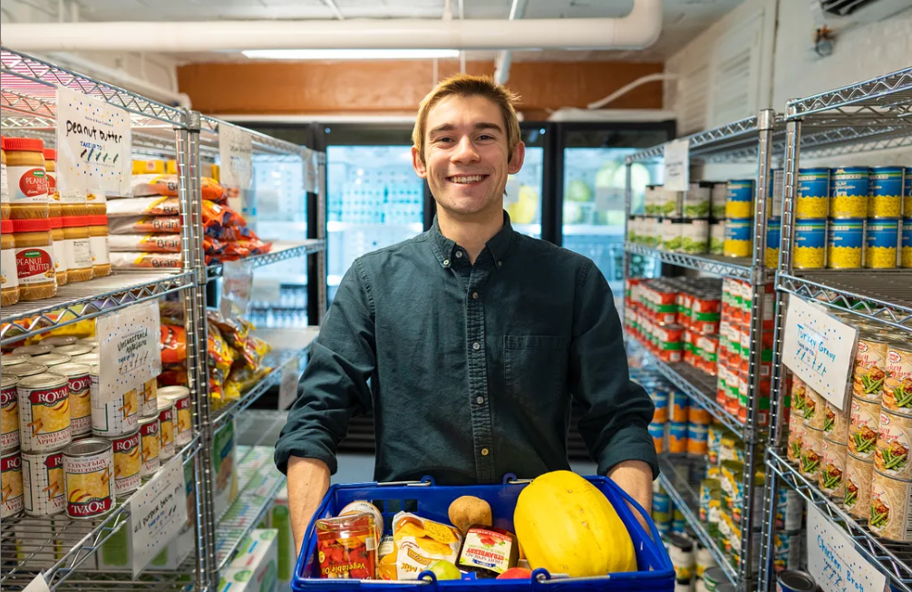

Maize & Blue Cupboard
Welcome to Maize & Blue Cupboard

Our Mission
To ensure members of the University of Michigan community—whether on a tight budget or physically restrained from getting to a grocery store—receive equitable access to healthy, nutritious, and nourishing food and the ability to prepare it for themselves or others.
Make an Appointment Now
Shopping at the Maize and Blue Cupboard is by appointment only. Please make an appointment by visiting our sign-up page. Schedule now.
Who We Are
College students and staff are experiencing food insecurity at alarming rates. The Maize and Blue Cupboard is here to provide an immediate and comprehensive response for the U-M community. By offering resources, educational opportunities, compassionate support and more, we help students develop the skills to make informed decisions.
Location
Located in the basement of the Betsy Barbour Residence Hall, please enter via the Maynard entrance only to ensure privacy for residents. Please contact us if you need ramp or elevator access.
Address:
420 S State St.
Ann Arbor, MI 48109
Phone:
734-936-2794
Hours
Shopping at the Maize and Blue Cupboard is by appointment only. Please make an appointment by visiting our sign-up page. Schedule your appointment now.
Hours of Operation:
Sunday: 2pm-6pm
Monday - Thursday: 3pm-7pm
Friday: 12pm-7pm
Saturday: Closed